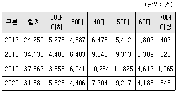
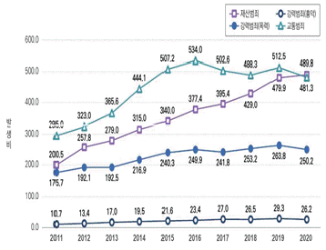
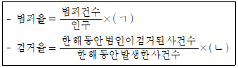
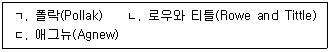
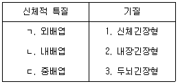
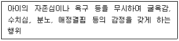
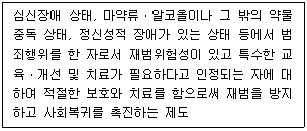
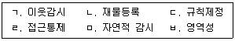

경비지도사-2차(범죄학) (2022-11-12 기출문제)
1. 「치안전망 2022」연령대별 피싱사기 피해 발생 건수에 관한 설명으로 옳은 것은?

- 2017년 대비 2020년 20대 이하 피싱사기 피해 발생 건수가 낮아졌다.
- 2017년 대비 2020년 30대 피싱사기 피해 발생 건수가 높아졌다.
- 2018년 이전은 40대, 2019년 이후는 50대에서 가장 많은 피싱사기 피해가 발생하였다.
- 60대 이상의 고령자 피싱사기 피해가 가장 심각하다.
(정답률: 알수없음)

2. 「2021 범죄분석」주요 범죄군별 고령자범죄의 발생비 추이에 관한 설명으로 옳은 것은?

- 교통범죄 발생비는 매년 가장 높게 나타나고 있다.
- 재산범죄 발생비는 2011년부터 2020년까지 매년 증가하였다.
- 강력범죄(폭력) 발생비는 2011년부터 2020년까지 매년 증가하였다.
- 강력범죄(흉악) 발생비는 2011년부터 2020년까지 매년 증가하였다.
(정답률: 알수없음)
3. 다음 ( )에 들어갈 숫자는?

- ㄱ: 1만, ㄴ: 100
- ㄱ: 1만, ㄴ: 1,000
- ㄱ: 10만, ㄴ: 100
- ㄱ: 10만, ㄴ: 1,000
(정답률: 알수없음)
4. 연령과 범죄와의 관계를 연구한 학자를 모두 고른 것은?

- ㄱ, ㄴ
- ㄱ, ㄷ
- ㄴ, ㄷ
- ㄱ, ㄴ, ㄷ
(정답률: 알수없음)
5. 서덜랜드와 크레시(Sutherland and Cressey)가 정의한 범죄학 연구범위가 아닌 것은?
- 범죄량과 분포
- 법의 제정과정
- 법의 위반과정
- 법위반에 대한 대응과정
(정답률: 알수없음)
6. 고전적 실험설계의 기본조건이 아닌 것은?
- 실험변수의 조작
- 외생변수의 통제
- 실험대상의 무작위화
- 양적자료 수집 중심
(정답률: 알수없음)
7. 우리나라의 일반적 범죄현상에 관한 설명으로 옳은 것은?
- 폭력범죄는 여성이 남성보다 더 많이 저지른다.
- 폭력범죄 발생건수는 대도시가 농어촌보다 많다.
- 청년기에는 지능범죄율이, 노년기에는 폭력범죄율이 높다.
- 사이버범죄는 감소추세에 있다.
(정답률: 알수없음)
8. 범죄학의 학문적 특성으로 옳지 않은 것은?
- 범죄현상에 대한 다양한 해석이 가능하다.
- 인접학문의 도움 없이 독자적으로 범죄원인을 분석한다.
- 범죄행위를 연구하는 과학적 접근법이다.
- 비행과 범죄에 대한 지식의 총체이다.
(정답률: 알수없음)
9. A는 편의점 절도범들의 행동특성을 직접 관찰하는 연구를 수행하였다. A가 수행한 연구방법은?
- 패널연구
- 코호트연구
- 현장조사연구
- 자기보고식연구
(정답률: 알수없음)
10. 여성범죄자에 대한 형사사법기관의 관대한 처벌이 이루어진다는 주장은?
- 남성성 가설
- 기사도 가설
- 신여성범죄자 가설
- 성숙효과 가설
(정답률: 알수없음)
11. 메스너와 로젠펠드(Messner and Rosenfeld)의 제도적 아노미 이론과 관련이 없는 것은?
- 정치제도
- 교육제도
- 과학제도
- 가족제도
(정답률: 알수없음)
12. 사회해체이론(social disorganization theory)과 관련이 없는 학자는?
- 맥케이(McKay)
- 샘슨(Sampson)
- 쇼(Shaw)
- 프로이드(Freud)
(정답률: 알수없음)
13. 범죄학 이론 통합에 관한 내용으로 옳지 않은 것은?
- 허쉬(Hirschi)는 이론 통합에 반대하였다.
- 개별 이론의 낮은 설명력에서 비롯되었다.
- 통합을 통해 이론 수를 줄일 수 있다고 본다.
- 통합은 중화이론(neutralization theory)을 통해 가장 많이 시도되었다.
(정답률: 알수없음)
14. 지능과 범죄와의 관계에 관한 설명으로 옳지 않은 것은?
- 고든(Gordon)은 지능이 높을수록 소년의 비행 가능성이 낮아진다고 보았다.
- 허쉬와 힌델랑(Hirschi and Hindelang)은 지능이 범죄에 미치는 영향이 간접적이지 않고 직접적이라고 보았다.
- 헌스타인과 머레이(Herrnstein and Murray)는 지능이 낮은 사람이 비행을 더 많이 한다고 보았다.
- 고다드(Goddard)는 정신박약이 청소년 비행과 관련되어 있다고 보았다.
(정답률: 알수없음)
15. 헤이건(Hagan)의 권력통제이론에 관한 설명으로 옳지 않은 것은?
- 여성주의 범죄학을 통제이론과 결합하였다.
- 가정 및 직장 내 권력 불평등에 관심을 가졌다.
- 성별 권력관계에 따라 자녀 양육방식이 달라진다.
- 가부장적 분위기에서 자란 여성은 평등적 분위기에서 자란 여성에 비해 더 많은 비행에 가담한다.
(정답률: 알수없음)
16. 쉘던(Sheldon)의 체형이론상 신체적 특질과 기질이 올바르게 연결된 것은?

- ㄱ - 1, ㄴ – 2
- ㄱ - 3, ㄴ – 2
- ㄴ - 1, ㄷ – 2
- ㄴ - 3, ㄷ - 2
(정답률: 알수없음)
17. 발달이론(developmental theory)에 관한 설명으로 옳지 않은 것은?
- 범죄행위에 미치는 요인의 영향력이 연령에 따라 다르다.
- 경력범죄자(career criminal)와 범죄경력(criminal career)의 개념은 서로 다르다.
- 범죄경력에 대한 대논쟁으로 발달론적 관점이 주목받게 되었다.
- 종단적 방법보다 횡단적 방법이 더 중요하다.
(정답률: 알수없음)
18. 낙인이론(labeling theory)에 관한 설명으로 옳지 않은 것은?
- 상징적 상호작용이론의 영향을 받았다.
- 탄넨바움(Tannenbaum)은 악의 극화라는 개념을 사용하였다.
- 레머트(Lemert)는 1차ㆍ2차ㆍ3차적 일탈을 구분한다.
- 낙인과정에서 사회적 반응이 중요하다.
(정답률: 알수없음)
19. 고전주의 범죄학자는?
- 베카리아(Beccaria)
- 에이커스(Akers)
- 머튼(Merton)
- 브레이스웨이트(Braithwaite)
(정답률: 알수없음)
20. 샘슨과 라웁(Sampson and Laub)의 연령 - 등급이론에 관한 설명으로 옳지 않은 것은?
- 글룩(Glueck) 부부의 자료를 활용하였다.
- 안정화(stability)는 무시하고 변화(change)에만 관심을 가졌다.
- 아동기 반사회적 행위는 성인기 범죄행위 예측에 중요한 요인이 될 수 있다.
- 결혼, 취업 등은 성인기 행동의 전환점이 될 수 있다.
(정답률: 알수없음)
21. 화이트칼라범죄의 특징이 아닌 것은?
- 주로 전문적 지식이나 직업적 지식을 활용하여 범죄를 저지른다.
- 피해자가 특정되어 피해자의 피해의식이 명확하다.
- 범죄자의 죄의식이 결여되는 경우가 많다.
- 높은 지위에 있던 인물들의 비리행위는 사회를 불신하게 만든다.
(정답률: 알수없음)
22. 세계보건기구(WHO)에서 정의한 마약류의 특성이 아닌 것은?
- 내성
- 의존성
- 금단현상
- 개인 한정적 유해성
(정답률: 알수없음)
23. 아바딘스키(Abadinsky)가 주장한 조직범죄의 특징이 아닌 것은?
- 이념성
- 계층성
- 영속성
- 전문성
(정답률: 알수없음)
24. 서덜랜드(Sutherland)의 차별접촉이론에서 차별적 접촉에 영향을 주는 요소가 아닌 것은?
- 빈도(frequency)
- 기간(duration)
- 강도(intensity)
- 혁신(innovation)
(정답률: 알수없음)
25. 속칭 '물뽕'으로 불리며 '데이트 강간 약물'로 사용되고 있는 것은?
- GHB
- LSD
- Heroin
- YABA
(정답률: 알수없음)
26. 허쉬(Hirschi)가 주장한 사회유대이론의 요소가 아닌 것은?
- 애착(attachment)
- 의례(ritualism)
- 참여(involvement)
- 신념(belief)
(정답률: 알수없음)
27. 재산범죄와 폭력범죄의 특성을 모두 가지고 있는 범죄유형은?
- 사기
- 횡령
- 강도
- 절도
(정답률: 알수없음)
28. 다음에 해당하는 아동학대 유형은?

- 신체적 학대
- 정서적 학대
- 성적 학대
- 방임
(정답률: 알수없음)
29. 그로스와 번바움(Groth and Birnbaum)이 분류한 강간범죄의 유형이 아닌 것은?
- 지배 강간
- 분노 강간
- 가학성 강간
- 스릴추구형 강간
(정답률: 알수없음)
30. 폭스와 레빈(Fox and Levin)이 분류한 대량살인범의 유형이 아닌 것은?
- 복수형 살인자(revenge killers)
- 사랑형 살인자(love killers)
- 이익형 살인자(profit killers)
- 편의형 살인자(expedience killers)
(정답률: 알수없음)
31. 소년법상 소년보호처분이 아닌 것은?
- 사회봉사명령
- 약물치료명령
- 보호관찰
- 수강명령
(정답률: 알수없음)
32. 전환제도(diversion)의 문제점으로 옳지 않은 것은?
- 형사사법망이 확대되어 사회적 통제가 강화된다.
- 형벌의 고통을 감소시켜 재범위험성이 증가된다.
- 범죄자의 경제적 사정이 고려될 수 있어 형사사법의 불평등을 초래할 수 있다.
- 범죄자로 낙인찍을 가능성을 줄인다.
(정답률: 알수없음)
33. 벌금형의 단점으로 옳은 것은?
- 자유형에 비하여 교화ㆍ개선 효과가 미흡하다.
- 단기자유형의 폐해를 제거한다.
- 오판의 경우 그 회복이 가능하다.
- 법인에 대한 집행이 가능하다.
(정답률: 알수없음)
34. 범죄피해자보호법상 범죄피해자의 법적 권리로 옳지 않은 것은?
- 신변보호를 받을 권리
- 형사절차에 참여할 권리
- 수사과정의 정보를 제공받을 권리
- 가해자와 화해할 권리
(정답률: 알수없음)
35. 다음에서 설명하는 보안처분은?

- 보호관찰제도
- 치료보호제도
- 치료감호제도
- 보안관찰제도
(정답률: 알수없음)
36. 범죄피해자보호법상 구조대상이 되는 범죄는?
- 살인
- 직권남용
- 배임
- 해킹
(정답률: 알수없음)
37. 수형자 구금제도 중 혼거제의 장점은?
- 범죄악풍의 감염가능성이 있다.
- 수형자의 사회성 훈련에 용이하다.
- 개별처우가 곤란하다.
- 수형자간 갈등을 조장할 수 있다.
(정답률: 알수없음)
38. 셉테드(CPTED)의 기본원칙으로 옳지 않은 것을 모두 고른 것은?

- ㄱ, ㄴ, ㄷ
- ㄱ, ㄷ, ㄹ
- ㄴ, ㄹ, ㅁ
- ㄹ, ㅁ, ㅂ
(정답률: 알수없음)
39. 스토킹범죄의 처벌 등에 관한 법률상 진행 중인 스토킹행위에 대하여 신고를 받고 현장에 출동한 사법경찰관리가 취할 수 있는 응급조치로서 옳지 않은 것은?
- 스토킹행위의 제지
- 스토킹행위자와 피해자 등의 분리
- 범죄수사
- 국가경찰관서의 유치장 또는 구치소에의 유치
(정답률: 알수없음)
40. 깨진창이론(broken window theory)에 근거한 경찰활동은?
- 경미범죄의 단속
- 안보사범 정보수집
- 살인범죄 수사
- 대형참사범죄 수사
(정답률: 알수없음)